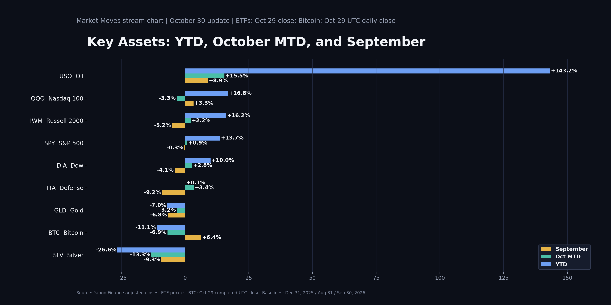
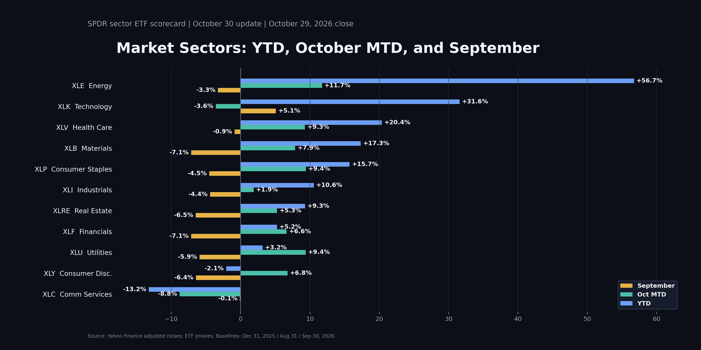

← Market Moves libraryOCTOBER 30, 2026 · FRIDAY REPLAY
October 30 — Market Moves
Replay and presentation resources from the October 30 session.
72 min 46 sec · Recording date and duration verified on Zoom.
Watch on Zoom ↗
Zoom’s automated overview describes market technical levels, position management and staged entries during a pullback. This is an automated topic overview, not a transcript-reviewed trade recap.
Charts & presentation resources
Prepared October 30: 9 key assets and all 11 sectors, showing YTD, October-to-date and September returns. Data ends October 29, 2026—not the October 30 close. ETF proxies use Yahoo Finance adjusted closes; Bitcoin uses its completed October 29 UTC daily bar. Baselines: December 31, 2025; August 31 and September 30, 2026. The CSV includes dates, values and all 60 return calculations.
Key assets performance

Sector performance

Earnings watchlist — October 30 & November 2–6
Archived watchlist prepared October 30, as originally shared. Reporting schedules may change; the source links below accompany the original calendar.
TODAY — Oct. 30
• NVT (nVent): AI/data-center electrical and cooling infrastructure. Reported EPS $1.52 vs. $1.40 expected.
• D (Dominion): data-center electricity-demand exposure. EPS $1.28 vs. $1.21 expected.
• CCJ (Cameco): on today’s calendar; nuclear-fuel/AI-power angle. Results weren’t populated in the calendar I checked.
• Other major reports already out: XOM $4.23 vs. $4.04 expected; CVX $5.28 vs. $4.87; ABBV $3.82 vs. $3.77.
Today’s list is more energy/infrastructure-heavy than core AI chips.
NEXT WEEK
“Before open” = before 8:30 a.m. Central; “after close” = after 3 p.m. Central. These are reporting windows, not conference-call times.
MONDAY, Nov. 2
• Before open: TSEM — specialty chip foundry; TEM — AI-enabled healthcare.
• After close: PLTR — enterprise AI adoption and growth outlook; AAPL — devices/on-device AI; ON and LSCC — chip demand; FN — optical/data-center manufacturing.
TUESDAY, Nov. 3 — my highest-priority session
• Before open: ETN — data-center power equipment/orders; SHOP — broader growth-tech read-through.
• After close: AMD — AI accelerators, server demand and guidance; ANET — AI networking; ALAB — AI-server connectivity; SMCI — AI servers and margins; SWKS — handset chips.
WEDNESDAY, Nov. 4
• Before open: DDOG — cloud/software demand.
• After close: ARM — chip architecture/licensing; QCOM — mobile/edge AI and diversification; COHR — optical components for AI networks.
THURSDAY, Nov. 5
• After close: LITE — optical networking/data-center demand; MCHP — broader semiconductor recovery; NET — cloud/edge infrastructure and AI-related usage.
FRIDAY, Nov. 6
• Before open: VST — electricity generation, data-center contracts and power-demand outlook.
MY PRIORITY ORDER
1. AMD — biggest direct semiconductor catalyst on this list.
2. ANET + ALAB + SMCI — whether AI infrastructure spending is translating into orders, revenue and margins.
3. PLTR — AI software monetization.
4. ARM + QCOM — chip demand and forward guidance.
5. COHR + LITE + FN — optical-networking demand.
For SOXX-related trades, focus on chip-company guidance; the AI software, networking and power names above are related catalysts, not all SOXX holdings.
Sources (checked today):
Today: https://finance.yahoo.com/calendar/earnings?day=2026-10-30
Next week, with company announcement links: https://www.stocktitan.net/articles/earnings-calendar-week-of-november-2-2026
October 30 calendar — Yahoo Finance · November 2–6 calendar — StockTitan
← Back to library